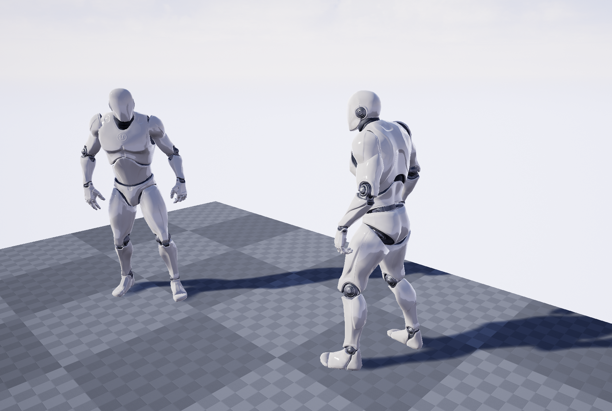
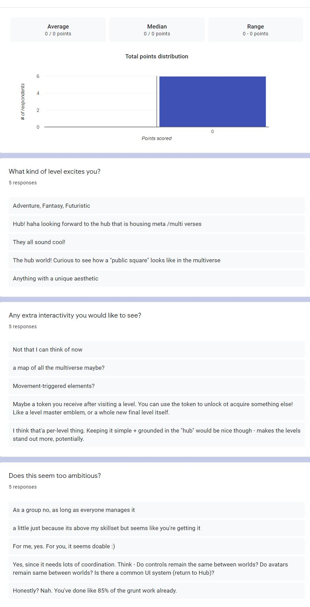
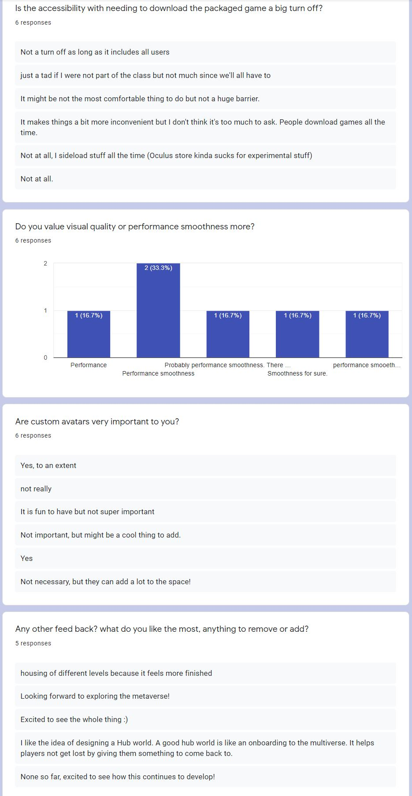
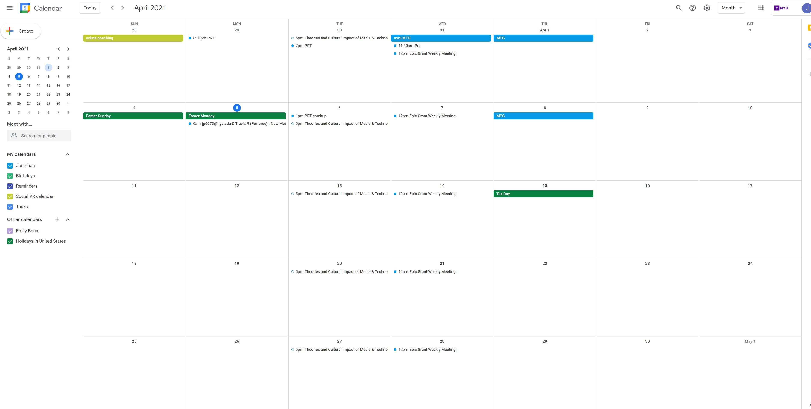

Week 9 Setting up Multiplayer
add comunications (figure out audio)
user spawn at lobby (make lobby level)
walks to teleporter (add the server teleporter here)
arrives at hub world to meet everyone (build hub world)
use the main control room to change the gate location gears and buttons and levers (setup blueprint to control level streaming and moving objects)
the hubworld and a new level streams in across a rainbow bridge, users can just walk back and forth with this (setup level streaming+ make rainbow bridge)
when the world is changed, everyone is forced teleported back into the hub world (add teleportation)
users also have a way to force teleport back to the hub world if they get stuck (add button press to activate)
 Before the presentation I didn't think about how people would tell eachother apart or even communicate. It also made me think of people wandering off from the group and how they might get stuck with no one to hear them. So after all this I came up with some logic ideas of teleportation and stuff. After much thought, I also decided on a cool theme, there are 9 of us in the group chat now which made me think of the 9 realms, throw in some some Norse mythology and the hub world is now the bifrost to teleport us to each world! Now I told the team that they don't have to change anything but that they should pick a code name to represent their level. Thought this would be a fun idea. I also think it would make a lot of sense for the current streaming world to change based of a lever or swtich in the hub world. The survey answers were pretty fun to read, they were pretty similar to the in class feedback. It sounds like most people are really excited to just see cool things and have a lot of fun. I find the feedback really motivating if anything and glad to know people really believe in me and my grand vision. I think I filled out most of the surveys, the ones I remember most were Chris's Stanley Parable like game. I think the most important part of that one is making sure the story writing is really fun and unexpecting as a focal point of the piece. I think another comment I gave was that I was a little worried about getting motion sick flying around Tinrey's world, if I don't though, it looks super fun playing around in zero gravity. Setting up multiplayer from local PC to another local PC wasn't too bad but figuring out how to do it over the net gave me more headache than I imagined. The key to everything working was finding out that the ports I had setup for the server were closed or firewalled so after opening them which took me about a day and a half of troubleshooting and rebuilding the engine a few times, I got working. Also got a chance to know some of my team members a little more helping them trouble shoot and learn some UE4 things. Turns out quickly recording myself creating and explaining things works rpetty well.  
Social Calendar
 Same as the previous week, I was so busy I didn't have too much time to spare to do too much virtual socializing. Although I did get a chance to sneak in a little mini card game on the Wed for two hours before getting back to the grind. Things lighted up a little bit after Wed's Planet Real-time show since I don't think we had another one schedualed for the next week. Still a lot of backend work to be done though.home
while (!deck.isInOrder()) {
print 'Iteration ' + i;
deck.shuffle();
i++;
}
print 'It took ' + i + ' iterations to sort the deck.';